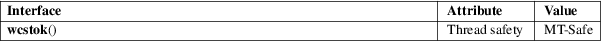

wcstok − split wide-character string into tokens
Standard C library (libc, −lc)
#include <wchar.h>
wchar_t
*wcstok(wchar_t *restrict wcs, const wchar_t
*restrict delim,
wchar_t **restrict ptr);
The wcstok() function is the wide-character equivalent of the strtok(3) function, with an added argument to make it multithread-safe. It can be used to split a wide-character string wcs into tokens, where a token is defined as a substring not containing any wide-characters from delim.
The search starts at wcs, if wcs is not NULL, or at *ptr, if wcs is NULL. First, any delimiter wide-characters are skipped, that is, the pointer is advanced beyond any wide-characters which occur in delim. If the end of the wide-character string is now reached, wcstok() returns NULL, to indicate that no tokens were found, and stores an appropriate value in *ptr, so that subsequent calls to wcstok() will continue to return NULL. Otherwise, the wcstok() function recognizes the beginning of a token and returns a pointer to it, but before doing that, it zero-terminates the token by replacing the next wide-character which occurs in delim with a null wide character (L'\0'), and it updates *ptr so that subsequent calls will continue searching after the end of recognized token.
The wcstok() function returns a pointer to the next token, or NULL if no further token was found.
For an explanation of the terms used in this section, see attributes(7).

C11, POSIX.1-2008.
POSIX.1-2001, C99.
The original wcs wide-character string is destructively modified during the operation.
The following code loops over the tokens contained in a wide-character string.
wchar_t *wcs =
...;
wchar_t *token;
wchar_t *state;
for (token = wcstok(wcs, L" \t\n", &state);
token != NULL;
token = wcstok(NULL, L" \t\n", &state)) {
...
}
strtok(3), wcschr(3)